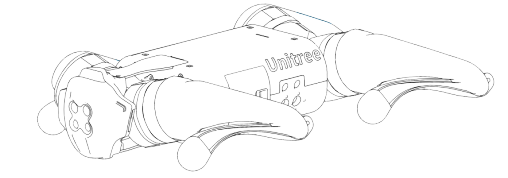

Go1 Basic Usage
Startup Pose
In order for the robot to boot properly, it must be in its startup pose before being powered on. The robot must be flat on its belly with its legs out to the side and feet on the ground.
Powering On
With the battery inserted into the robot, press the button on the battery once with a short press followed by another long press. Hold the second press until the lights flash and you hear the fans on the robot start up.
General Go1 Operation
See the Go1 Operation video for details.
Handheld Controller
See the Handheld Controller Operation Demonstration video for details.
Label (Following) Controller
See the Label (Following) Controller Demonstration video for details.